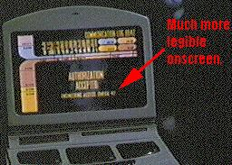

Data Stellare 49485.2: Neelix, autoproclamatosi giornalista, viene a
conoscenza che un membro dell'equipaggio ha manifestato scontentezza nei
confronti della
Flotta Stellare e ha chiesto di andarsene. Poco dopo, Tom Paris
viene sospeso dal servizio per diventare pilota di un convoglio
talaxiano, lasciandosi dietro il sorpreso
equipaggio della Voyager. Immediatamente i
Kazon Nistrim e Seska attaccano il convoglio, rapiscono Paris e tentano di
estorcergli delle informazioni segrete. Nel frattempo Neelix sospetta che a
bordo della Voyager ci sia qualcuno che segretamente comunica con i
Kazon, le sue indagini lo portano
direttamente a Tom Paris.
- Debutta il programma Un briefing con Neelix.
- La Voyager si trova nel quadrante Delta da circa un anno.
- Manca un mese al termine della gravidanza di Seska.
- Muore Michael Jonas, ucciso in una colluttazione con
Neelix, che aveva scoperto il suo tradimento.
- Il Principe Abdallah di Giordania fa una breve apparizione come ufficiale
medico che parla con Kim. Il Principe è stato nominato principe ereditario da
Hussein poco prima della sua morte ed è salito al trono di Giordania nel
febbraio 1999.
-
Hogan
usa il codice di autorizzazione Omega-4-7 per tentare di accedere alle
registrazioni cancellate dei log. Neelix utilizza il medesimo codice, che
appare anche a video, per accedere al terminale di Paris (vedi immagine).
- Quando Neelix usa il terminale nell'alloggio di Paris, nella schermata
delle comunicazioni si legge in alto a destra 8847.
- Quando Neelix registra il suo discorso in omaggio al tenente Paris che sta
per abbandonare la Voyager, attiva la telecamera. Mentre la accende si
intravede che sul tavolo ci sono degli oggetti, tra i quali una tazza. Quando
si vede l'inquadratura della telecamera, la tazza ha il manico girato dalla
parte opposta.
- Torres chiede le specifiche del carico elettrodinamico e Jonas manda
Hogan
a prenderle, ma non bastava renderle disponibili nel network informatico della
nave? [T:38:25]
- Così come è stato tentato con successo di teletrasportare Jonas fuori
dalla sala macchine, non sarebbe stato possibile teletrasportare dentro Tuvok
e qualcun altro?
- Perché quando vuole cessare l'allarme rosso Janeway lo dice a Tuvok in
sala macchine? Non bastava comandarlo al computer?
- Quando Neelix sta indagando in sala macchine,
Hogan pronuncia la frase
«autorizzazione sala macchine Omega-4-7» per accedere ai diari, ma quando
Neelix va nell'altra stanza il codice è diventato «autorizzazione sala
macchine Omega-7-4».
- Neelix continua a chiamare Henikeh il pianeta Hemikek.
Dottore: I'm a doctor, not a performer.